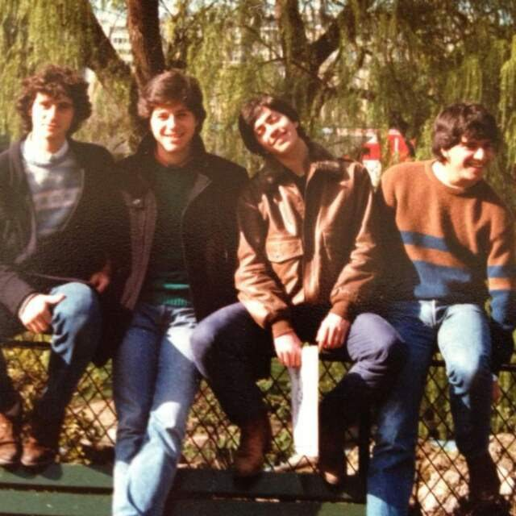
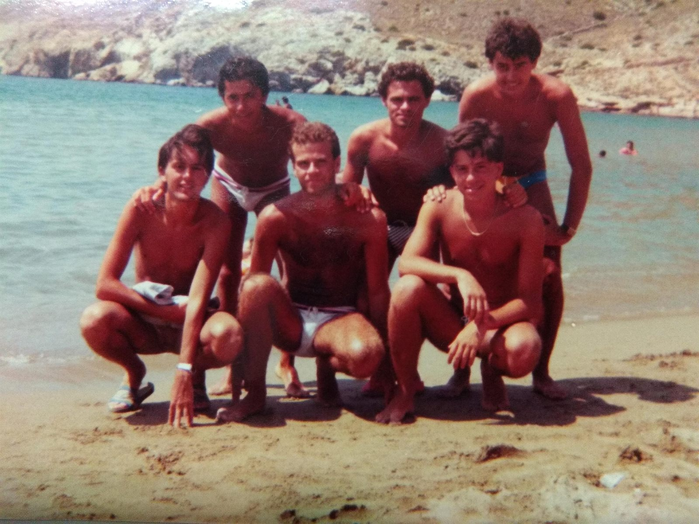

Itinerari


Il cerchio azzurro attorno a una tappa vuol dire che è compresa nella Padova Card; il segnaposto viola è il pranzo, i quadratini verde-petrolio sono i due bar. La linea gialla tratteggiata è il tram SIR1, che dalla stazione arriva alla fermata Santo in sei fermate: passaci sopra per leggere i nomi.
09:30 · tram, 20 min
09:50 · 90 min · 10,00 €
11:45 · 25 min · 4,00 €
12:12 · 18 min, stesso biglietto · Compreso
12:35 · 20 min · Gratuito
13:00 · 90 min
14:35 · 45 min · 8,00 €
15:30 · 75 min · 12,00 €
17:05 · 30 min · Gratuito
09:30 · 20 min per il centro
09:50 · 25 min · 4,00 €
10:15 · 15 min, stesso biglietto · Compreso
10:30 · 75 min · 12,00 €
11:50 · 45 min · 8,00 €
12:35 · 20 min · Gratuito
13:00 · 90 min
14:30 · 60 min · 15,00 €
15:50 · 80 min · 10,00 €
17:25 · 25 min · Gratuito
09:30 · 20 min per il centro
09:55 · 25 min · 4,00 €
10:22 · 18 min, stesso biglietto · Compreso
10:45 · 45 min · 8,00 €
11:35 · 15 min · Gratuito
11:55 · 55 min · 15,00 €
13:00 · 90 min
14:45 · 90 min · 10,00 €
16:15 · 60 min · 10,00 €
17:20 · 30 min · Gratuito
Che cosa si vede a ogni tappa, quanto costa ciascun itinerario, dove e come si comprano i biglietti del tram, e le due tabelle con orari, prezzi e fonti.
Apri →